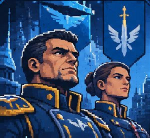
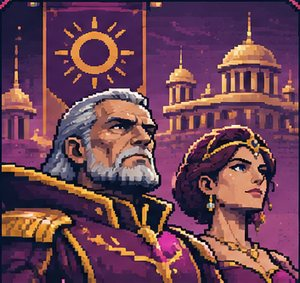

Miner and trader
Mine asteroids, sell ore at stations and learn where each good is scarce. Improve your ties with the factions, deliver what each power is after, and rule the markets. Hire miners to work for you.

Find your own path in a galaxy divided by four powers. Explore star systems, trade goods, mine asteroids and take contracts — or turn to smuggling and piracy. Develop your pilot, customise your ship and build a fleet and stations of your own.
New pilot: Choose your pilot name, name your company, customise your appearance and decide whether to enable a living universe, where events continue while you're away (up to 48 hours of catch-up).
Allegiance: Start independent, or swear allegiance to one of the powers right now. Your oath brings its bonus and friendly ties with its ships. It also brings its feuds: whoever is at war with it will treat you as an enemy. You can renounce it later, but the galaxy remembers what you did under its flag.
What will your path be? These are ways to play, not locked character classes. Follow the opening guide to learn the basics, or read the Pilot's Encyclopedia (H).
Mine asteroids, sell ore at stations and learn where each good is scarce. Improve your ties with the factions, deliver what each power is after, and rule the markets. Hire miners to work for you.
Explore unknown systems, stars and planets. Scan ships, rocks and signals, find wrecks others missed and chart the galaxy for the powers. Use the scanner (E) to survey systems, planets and deep finds, keep the data in your data bank and sell it to the power that pays most.
Take a contract and remove the inconvenient, guard convoys, or raid them yourself. Smuggle stolen goods past the patrols and fence them on the black market. The more the black market thrives, the more it undermines the powers. But mind whose flag you fire under: the galaxy remembers.
Found a station in an unclaimed system or seize control of one, build a fleet and grow. Every system of yours brings income and research, and raiders who will test it. Earn the powers' respect and build your influence.
Once, trade lanes bound the star systems together. Today they are divided by borders, old grievances and wars whose beginnings few still remember.
Four powers compete for the future of the galaxy.
The Terran Concord keeps order through the strength of its fleets. The Solar Dominion rules the markets and buys its influence. The Free Accord rejects the rule of empires, and the Independent Systems trade with anyone who pays.
Conflicts smoulder along the borders. Trade convoys vanish in uncharted sectors, pirates hold the forgotten lanes, and distant colonies shift their loyalty to whoever can keep them safe.

Discipline • Unity • Military supremacy
The Terran Concord was born after ruinous interstellar wars, when the human colonies united under one government. Its fleet guards the trade lanes, fights piracy and enforces galactic law. The Concord believes peace can only be kept by force. It guards its borders without compromise and often sees the independent systems as a threat.

Wealth • Power • Trade
The Solar Dominion grew from a union of the richest merchant houses and industrial corporations. It controls vast trade stations, mining colonies and financial hubs. Formally an empire, its real power lies with the patrician houses. The Dominion sees the galaxy not as land to protect but as a source of prosperity: whoever controls trade controls the future. Its expansion has sparked many conflicts with the Terran Concord and the free colonies.

Freedom • Research • Technology
The Free Accord grew from science colonies, explorers and settlers who refused the authoritarian rule of the great powers. Its members believe the galaxy should belong to no empire and every civilisation has the right to its own path. Their ships excel in advanced sensors, navigation and survey technology. Though they reject the Concord's militarism, they work with its fleets against the Dominion's expansion.

Independence • Mining • Survival
The Independent Systems are a loose fellowship of mining colonies, frontier settlements, smugglers' havens and small planetary republics. They have no common ruler and no united army; only the refusal of the great powers' rule and the will to keep their trade and mining lanes open bind them. Here former Concord soldiers, Dominion traders, Accord explorers and fortune hunters all meet.
In this galaxy you are not the hero of a prophecy. You are just another pilot.
You can serve one of the powers, fight for its cause, build a fortune, or stay independent.
The stars belong to those who can reach them. What you do with them is up to you.
The galaxy is waiting. Whose side will you fly for?
Choose your pathMouse controls and keyboard shortcuts for the current browser build.
Start a new game and discover the world at your own pace.